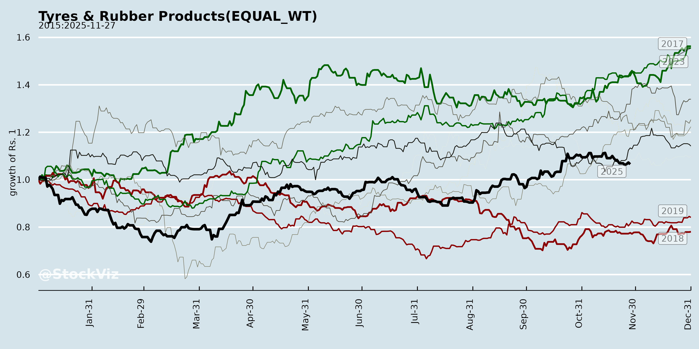
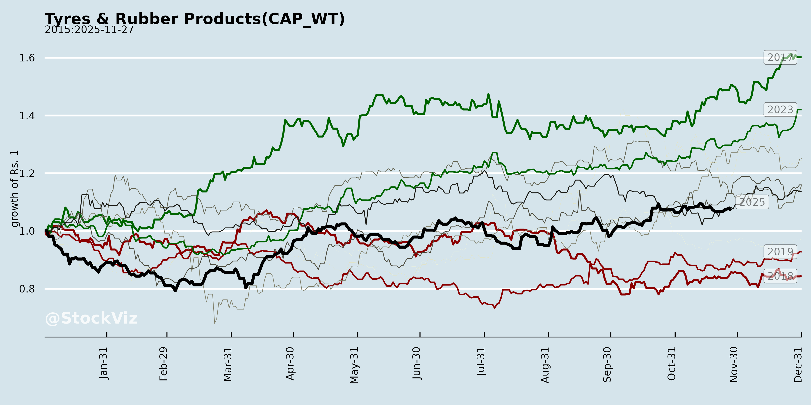
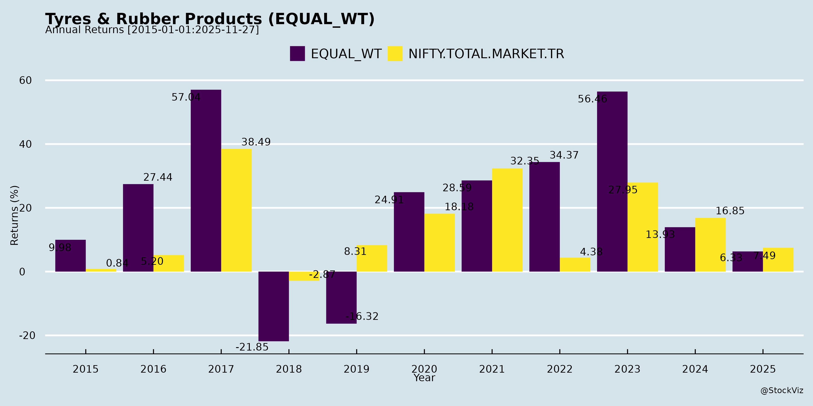
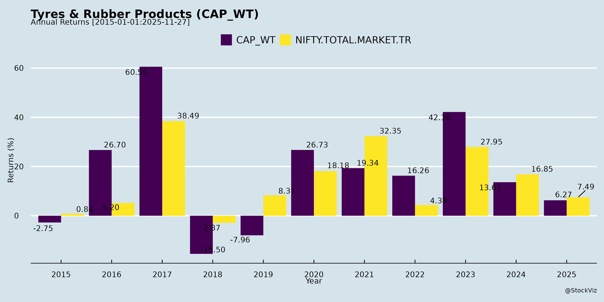
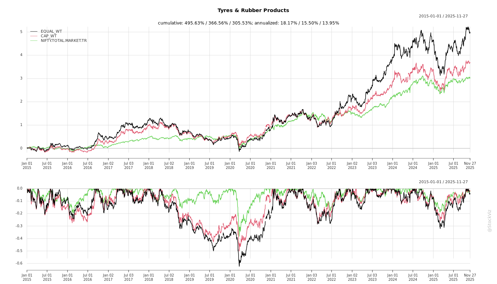
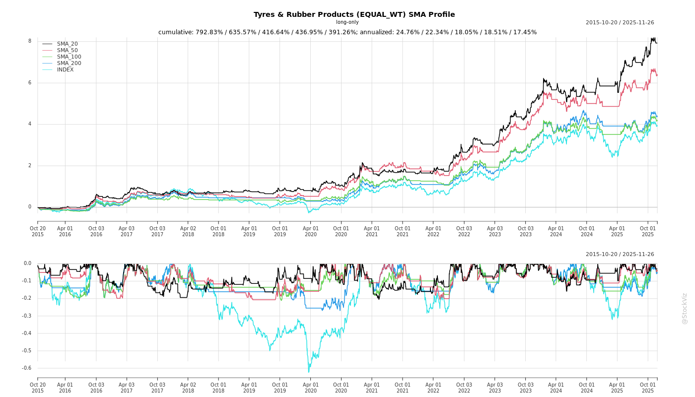
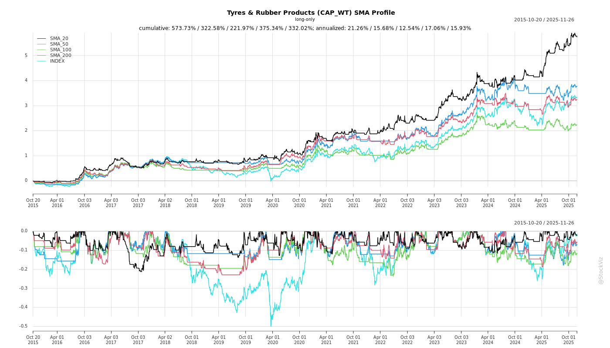
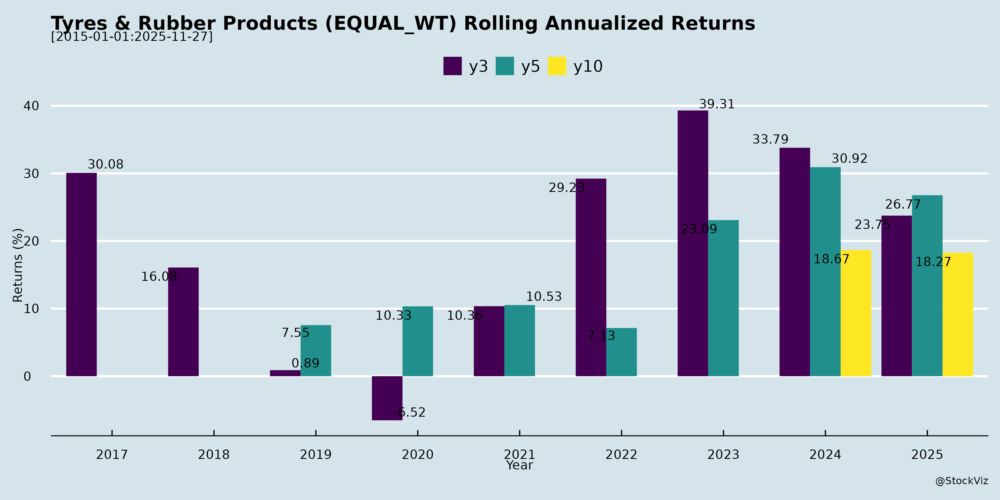
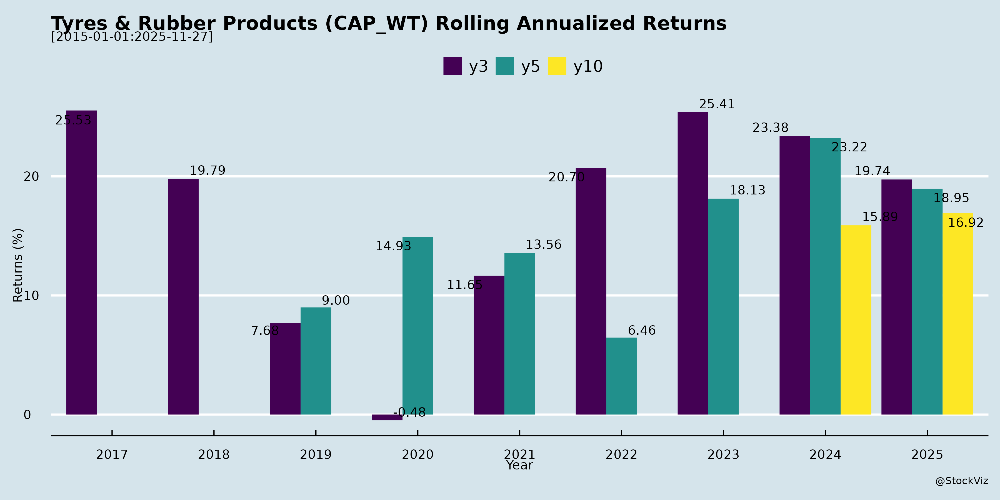

Annual Returns




Cumulative Returns and Drawdowns

SMA Scenarios


Current Distance from SMA
Rolling Returns


EBIT (% of Industry Total)
Revenue (% of Industry Total)
AI Summaries
Analyst
asof: 2025-11-27
Indian Tyres & Rubber Products Sector Analysis (Based on Q2 FY26 Earnings Transcripts)
The sector demonstrated resilience in Q2 FY26, with most players reporting revenue growth (e.g., Apollo +6% YoY, JK Tyre +10% YoY record high, BKT stable despite volumes dip). Domestic demand rebounded post-GST cuts, aided by softening raw materials, but exports faced headwinds. Below is a structured summary of headwinds, tailwinds, growth prospects, and key risks.
Headwinds
- US Tariff Escalation: 50% duties on Indian tyres severely hit exports (BKT: US ~10% of prior sales, volumes -4% YoY; Apollo/JK diverted volumes). Prolonged uncertainty led to inventory drawdowns and wait-and-watch in US markets.
- Weak Europe Demand: Challenging environment (Apollo: 4% YoY growth despite volumes up; BKT: headwinds easing slowly). OEM pullback in some categories (e.g., Apollo’s Spacemaster decline).
- Regulatory Costs: EU Deforestation Regulation (EUDR) raised raw material procurement costs (BKT: partial impact in Q2, full in Q3; offset by softening commodities but adds volatility).
- Short-term Disruptions: GST implementation caused Sep’25 destocking/slowdown (Apollo: replacement impacted); competitive intensity in TBR/PCR (Apollo: share stabilized at ~29%/20%).
- Geographic/Product Mix Drag: Lower US/Europe exposure hurt realizations (BKT: EBITDA margin dip to 21.5%; Apollo Europe at 12.7%).
Tailwinds
- GST Rationalization: Radical reform (tyres 28%→18%, farm 18%→5%) boosted consumption; fully passed on, driving highest revenues in 10 quarters (Apollo/JK/BKT). Festive/Oct’25 surge evident.
- Benign Raw Materials: Seq decline (Apollo: -3%; natural rubber ~INR210/kg, synthetics INR175/kg). Expected range-bound/stable in Q3, supporting margins (Apollo India 15.3%, JK 13.3%).
- Strong Domestic Momentum: Volumes up across segments (JK: domestic +15%, TBR replacement +22%, PCR +16%; Apollo: mid-single digits). OEM recovery (trucks post-monsoon), rural/infra/rain-fed demand.
- Premiumization & Branding: Vredestein traction (Apollo), podium wins in Europe; sponsorships (Apollo cricket, BKT Australia series) enhancing equity.
- Operational Efficiencies: High utilizations (80-90%), capex yielding leverage (JK radial >90%).
Growth Prospects
- India Focus (H2 FY26+): Double-digit top-line sustained (JK: 10% guidance; Apollo: Q3 at par/improved). Replacement/OEM mid-high single digits; farm/2-3W high-teens (GST + infra/mining rebound). Premium mix up (Apollo UHP 49%).
- Export Diversion/Recovery: Shift to LATAM/Brazil/Africa/Middle East (JK/Apollo); Mexico strength (JK Tornel +26% QoQ). US potential via India-US deal; Europe low-single digit rebound.
- Capacity Ramp: Expansions on track (Apollo Hungary/AP PCR; BKT TBR/PCR; JK INR1,200 Cr across PCR/TBR). Targets: BKT INR23,000 Cr by 2030; JK margins 13-15%.
- New Avenues: EV fitments, OHT/mining (BKT Caterpillar award), digital/sustainability (Apollo ESG score up, JK AI bot/EPD).
- Long-term: 6.8-7.8% GDP, auto exports +20%, rural recovery; sector ROCE/ROE improving (Apollo 0.8x net debt/EBITDA).
Key Risks
- Tariff/Geopolitical Prolongation: No quick US resolution (BKT payback on capex assumes easing); EU trade uncertainties.
- Raw Material Reversal: If cycle turns adverse, limited pricing power post-GST pass-through (Apollo: 7-8% cushion but competitive).
- Competition: New entrants (financially strong OHT player into TBR/PCR per Apollo); fierce TBR battles, potential margin erosion.
- Execution: High capex (BKT INR2,000-2,200 Cr FY26; debt stable but monitored); ramp-up delays, EUDR full impact.
- Demand Volatility: Monsoon/infra delays, destocking recurrence, OEM selectivity (Apollo: profitability-based bidding).
- Macro: Currency (INR vs. EUR/MXN favorable), global slowdown (Europe agri replacement muted).
Overall Outlook: Positive for FY26 H2/FY27 with domestic tailwinds dominating (GST-led volume/margin uptick). Exports derisked via diversification, but US/Europe resolution critical. Sector poised for profitable growth (EBITDA 13-15%+), focusing on premiumization/capex, but monitor tariffs/competition. ROCE targets (12-15%) achievable with leverage.
General
asof: 2025-11-27
Summary Analysis: Indian Tyres & Rubber Products Sector
Based on the provided regulatory disclosures (Reg 30 SEBI LODR filings from Apollo Tyres, CEAT, JK Tyre, MRF, Tolins Tyres, and TVS Srichakra in 2025), the sector shows a mix of sustainability pushes, strategic transactions, and operational wins amid regulatory scrutiny. These filings highlight short-term positives in orders and green initiatives but underscore governance and compliance pressures. Below is a structured analysis:
Tailwinds (Positive Factors)
- Sustainability and ESG Momentum: Apollo Tyres (ESG score: 76) and CEAT (67, ‘Good’ category) are actively/voluntarily highlighting ESG ratings from CFC Finlease, signaling improving environmental/social governance. This enhances investor appeal, access to green financing, and aligns with SEBI’s disclosure mandates (e.g., Nov 2024 circular).
- Renewable Energy Adoption: MRF’s power supply agreement with Serentica Renewables (acquiring ~26% stake) for captive solar/wind power reduces energy costs (key input for tyre manufacturing) and supports net-zero goals under govt captive policy.
- Order Inflows and Demand: Tolins Tyres secured a Rs. 40-50 Cr rate contract from Institute of Road Transport (IRT) for tread rubber/gum/cement to Tamil Nadu STUs (6-month tenure), indicating steady replacement demand from public transport fleets.
- Value Unlocking: JK Tyre’s Rs. 130.64 Cr sale of 40L shares in subsidiary Cavendish Industries to promoters (retaining subsidiary status) provides liquidity; Cavendish contributes ~27% to group income and ~22% to net worth (FY25).
Headwinds (Challenges)
- Unsolicited ESG Scrutiny: CEAT’s rating was independently assigned (not commissioned), based solely on public data, highlighting potential gaps in proactive ESG reporting/disclosures across peers.
- Regulatory Compliance Burden: TVS Srichakra’s shareholder KYC/PAN notice (per SEBI June 2025 circular) mandates electronic dividends and demat shifts, increasing admin costs and folio management friction for physical holders.
- Related Party Exposure: JK Tyre’s transaction with promoters/promoter group (Bengal & Assam Co., J.K. Fenner) is arm’s-length but flagged as RPT, inviting governance/valuation scrutiny amid SEBI’s enhanced disclosures (Nov 2024 circular).
Growth Prospects
- Domestic Demand Resilience: Strong public sector orders (e.g., Tolins’ IRT contract) point to sustained replacement/retreading needs in commercial vehicles/STUs, potentially expandable to other states. Cavendish’s material FY25 contribution (~27% income) suggests subsidiaries drive diversified growth.
- Cost Efficiencies via Green Tech: MRF’s renewables pivot could lower opex (energy ~10-15% of tyre costs), improving margins; sector-wide adoption may attract ESG-linked capex funding.
- ESG as Differentiator: Higher ratings (e.g., Apollo’s 76) position leaders for premium pricing/export edge in EU/US markets emphasizing sustainability; voluntary disclosures build long-term brand equity.
- Strategic Flexibility: Promoter-led deals (JK Tyre) enable cash recycling for capex/debt reduction, supporting capacity expansions amid India’s tyre demand growth (~8-10% CAGR projected to 2030, driven by CVs/EVs).
Key Risks
- Governance/Disclosure Gaps: Reliance on public data for ESG (CEAT) risks rating volatility/downgrades; RPTs (JK Tyre) could trigger SEBI probes if perceived non-arm’s length.
- Regulatory Overhang: Mandatory KYC/demat (TVS) may delay dividends/transfers; non-compliance could lead to trading restrictions or investor unrest.
- Execution Dependencies: Tolins’ order (Rs. 40-50 Cr) is rate-based (not firm); delays in execution/tender renewals pose revenue uncertainty. MRF’s renewables stake assumes smooth project ramp-up.
- Sector-Wide (Inferred): No direct mentions, but ESG focus implies vulnerability to raw material sustainability mandates (rubber/crude volatility); promoter transactions risk minority shareholder alienation.
Overall Outlook: Moderately positive with tailwinds from ESG/orders outweighing headwinds. Growth hinges on sustainability execution and demand from infra/CVs; monitor Q3FY26 earnings for financial impact. Sector PE likely supported by green narratives, but risks from compliance could pressure smaller players like Tolins/TVS.
Investor
asof: 2025-11-27
Indian Tyres & Rubber Products Sector Analysis (Q2/H1 FY26 Insights)
Based on earnings transcripts and announcements from key players (Apollo Tyres, Balkrishna Industries - BKT, JK Tyre, with references to CEAT and Tolins), the sector exhibits robust domestic momentum amid global headwinds. Consensus highlights GST reforms as a game-changer, driving volume-led growth, while exports face tariff pressures. Below is a structured summary:
Tailwinds
- GST Rationalization (Sep 2025): Uniform slab reduction (tyres: 28%→18%; farm tyres: 18%→5%) passed 100% to consumers, spurring replacement demand (e.g., Apollo: highest revenue in 10 quarters; JK Tyre: 15-22% domestic volume growth). Festive/post-monsoon restocking boosted Oct volumes.
- Favorable Raw Material Costs: 3% QoQ decline (natural rubber ~₹210/kg → ₹185/kg; synthetics/carbon black stable/down). Range-bound outlook for Q3 supports EBITDA margins (Apollo: 14.9%; JK: 13.3%; BKT: 21.5%).
- Strong Domestic Demand: Mid-single-digit volume growth (replacement/OEM); rural/infra/mining recovery (e.g., Apollo: mid-single-digit India volumes; JK: TBR replacement +22% YoY). Premiumization via Vredestein (Apollo), UX Royale (JK).
- Operational Efficiencies: High utilizations (80-90%); capacity ramps (Apollo Hungary/AP; BKT/JK TBR/PCR expansions). Brand investments (Apollo cricket sponsorship; BKT Caterpillar award).
- Subsidiary/Export Diversification: JK Tornel +26% QoQ revenue; currency tailwinds (₹ vs. MXN/EUR).
Headwinds
- US Tariffs Escalation: 25%→50% duties on Indian OHT tyres (BKT: ~10% sales volume hit, 4% YoY degrowth; JK: diverted 3% US exposure). Inventory drawdowns delaying full impact.
- Weak Global Demand: Europe soft (Apollo: challenging; BKT: headwinds easing slowly); overall export uncertainty (JK: +13% QoQ via diversification).
- Competitive Intensity: New entrants (e.g., OHT players eyeing TBR/PCR); pricing pressure risks (Apollo/JK note vigilance; no aggressive cuts yet).
- Regulatory Costs: EUDR compliance inflating raw material costs (BKT: partial Q2 impact, full in Q3, offset by softening others).
- Inventory Fluctuations: GST transition caused Sep destocking/restocking (Apollo/BKT).
Growth Prospects
- India-Centric Momentum: H2 FY26 double-digit revenue growth (Apollo: Q3 ≥ Q2; JK: 10% FY26 guidance sustained). Healthy replacement (mid-high single digits), OEM pickup (CV/PCR), EV/rural tailwinds.
- Capacity & Premiumization: Expansions to add 12-15% capacity (e.g., JK: ₹1,400 Cr projects online Q3FY26; BKT: TBR/PCR pilot H2FY27). Premium mix up (Apollo UHP 49%; JK 16"+ rims).
- Export Resilience: Diversification to LATAM/Africa/EU (JK/BKT); tariff relief optimism (India-US trade deal). Long-term: BKT ₹23,000 Cr by 2030; Apollo profitable Europe growth.
- Margin Expansion: 13-15% EBITDA sustainable (JK); operating leverage from volumes/mix (Apollo India 15.3%).
- Sustainability/ESG: Awards/ratings (Apollo S&P 58; JK EPD publication) aiding OEM wins.
Key Risks
- Tariff Persistence: Prolonged US 50% duties could slash exports (BKT U.S. share drop); no viable threshold quantified, but viability questioned below certain levels.
- RM Volatility: Adverse cycle post-stability (headroom from GST ~7-8%, but pricing discipline key).
- Competition & Share Loss: New players (OHT→TBR/PCR) may undercut; TBR share stabilization but regaining needed (Apollo ~29%).
- Demand Slowdown: Europe weakness prolongs (low single-digit growth); monsoon/infra delays.
- Execution: Capex overruns/delays (BKT ₹2,000-2,200 Cr FY26); working capital spikes (JK net debt +₹339 Cr).
- Macro/Geopolitical: Currency (favorable now), trade deals (USMCA revision), EUDR full costs.
Overall Outlook: Sector poised for 8-10%+ FY26 growth (India-led), with margins at cycle highs (13-15% EBITDA). Domestic tailwinds outweigh export headwinds; focus on premiumization/diversification mitigates risks. Monitor US tariffs and RM for upside/downside.
Press Release
asof: 2025-11-27
Indian Tyres & Rubber Products Sector Analysis (Based on Q2/H1 FY26 Announcements)
The Indian tyre sector demonstrated resilient growth in Q2/H1 FY26, driven by OEM demand, exports recovery, and strategic expansions, despite seasonal and policy-related headwinds. Key players like CEAT (14.2% YoY revenue growth to ₹3,773 Cr), MRF (7% YoY total income to ₹7,487 Cr), Tolins Tyres (2% YoY H1 revenue to ₹156 Cr), and others reported healthy top-line expansion, with EBITDA margins stabilizing at 11-14%. Sustainability initiatives (e.g., JK Tyre’s $100 Mn IFC loan) and international outreach (e.g., TVS Eurogrip’s motor shows) underscore premiumisation and global focus. However, raw material softening provided margin relief, while debt rose for capex/acquisitions.
Tailwinds
- Strong Demand Recovery: OEM volumes surged (double-digit for CEAT/MRF), fueled by festive inventory build-up and auto sector growth. Exports rebounded (CEAT/MRF), with international presence expanding (TVS Eurogrip in Mexico/Sri Lanka).
- Favorable Policy: GST cuts (e.g., 18%→5% on tractor tyres) boosted sentiment, unlocking pent-up demand post-deferrals (Tolins/MRF). Expected to drive replacement sales in H2.
- Raw Material Relief: Softening input costs (natural rubber, etc.) expanded gross margins (CEAT +352 bps YoY; MRF/Tolins benefited), supporting EBITDA growth (CEAT +38.8% YoY).
- Sustainability Momentum: ESG focus (CEAT’s sustainable tyre launch, JK Tyre’s SLL, awards) attracted green financing and enhanced brand value.
- Capex & Premiumisation: Expansions in PCR/TBR/OHT (CEAT’s $225 Mn Camso acquisition; JK Tyre’s capacity add), agri tyres (Tolins), positioning for high-margin segments.
Headwinds
- Seasonal & Policy Disruptions: Monsoon dampened replacement sales (MRF); GST anticipation deferred Q2 orders (Tolins sales slowdown).
- Margin Pressures: Higher employee/fixed costs and input volatility compressed EBITDA margins (Tolins: 19.6%→14.3%; CEAT employee costs +19.5% YoY).
- Rising Debt & Costs: Debt up (CEAT D/E 0.64x from capex/dividends); finance costs rose 30-32% YoY across peers due to higher borrowings.
- Volume Mix Challenges: Replacement lagged OEM/exports; inventory changes impacted COGS (CEAT negative inventory swing).
Growth Prospects
- H2 Acceleration: Deferred demand + GST tailwinds to fuel double-digit growth (CEAT targets; MRF interim dividend signals confidence). Agri/OHT/PCV segments key (Tolins tractor tyres from Q3).
- Export & Global Push: 15-20% export mix (CEAT); events like motor shows to penetrate Latin America/South Asia (TVS).
- Capacity & Innovation: ₹400-500 Cr quarterly capex (CEAT); sustainability products (90% sustainable materials by CEAT) to capture premium 10-15% CAGR.
- Sector Outlook: Industry volumes +8-10% FY26 (OEM-led); EBITDA margins ~12-14% with RM stability. Aggregated PAT growth ~10-15% for majors.
Key Risks
- Raw Material Volatility: Rubber prices could rebound (80% of COGS), eroding margins (historical 20-30% swings).
- Demand Timing/Geopolitical: GST/monsoon deferrals; export tariffs (MRF); auto slowdown risks.
- Execution Risks: Acquisition integration (CEAT-Camso provisional accounting); capex delays inflating debt (CEAT Debt/EBITDA 1.8x).
- Competition & Costs: Intense rivalry in radials; rising interest (CEAT +31% YoY) and forex exposure.
- Macro: Inflation, monsoons, or EV shift could cap replacement/OEM growth.
Overall Summary: The sector is bullish for H2 FY26 with 10-12% revenue CAGR potential, buoyed by policy, OEM, and exports. Tailwinds outweigh headwinds, but RM/debt management critical. Investors should monitor Q3 for GST-led rebound and margin trajectory. (Analysis based solely on provided Q2/H1 FY26 filings from CEAT, JK Tyre, MRF, Tolins, TVS Srichakra.)
Copyright © 2023 SAS Data Analytics Pvt. Ltd. All rights reserved.
🐞